Processing Algorithms
Model Baker bietet eine leistungsstarke Sammlung von Algorithmen, um ili2db-Jobs zu verarbeiten. Ausserdem gibt es einige Hilfsalgorithmen, wie z. B. das Erstellen von Baskets oder das Auslesen der Datenbankparameter aus einem Layer.
Dieses Kapitel beschreibt die allgemeinen Funktionsprinzipien der Model Baker Algorithmen, erklärt jeden einzeln und zeigt ein praktisches Beispiel eines Processing-Modells mit dem QGIS Model Designer.
Allgemein
Während viele QGIS-Algorithmen komplexe Widgets zum Festlegen von Konfigurationen anbieten, stellen die Model Baker Algorithmen eine einfache Liste von String-Parametern bereit. Manchmal werden diese durch Aufzählungen, Dateimanager oder Checkboxen vereinfacht, meistens handelt es sich aber um Freitext. Dadurch kannst du die einzelnen Algorithmen sehr flexibel in Workflows des Modell Designers verwenden.
Die Algorithmen verwenden im Backend die Model Baker Library. Sie bieten die gleichen Optionen und Verhaltensweisen wie Model Baker als Plugin. Zusätzlich werden allgemeine Konfigurationen wie benutzerdefinierte Modellverzeichnisse berücksichtigt und können über die globalen Model Baker Einstellungen angepasst werden.
Es gibt drei Arten von Algorithmen: die ili2db-Job-Algorithmen, die Datenbank-Algorithmen und die Utils zur Verwendung im QGIS Model Designer.
Algorithmen
ili2db Algorithmen
Zu finden in der Gruppe Model Baker > ili2db
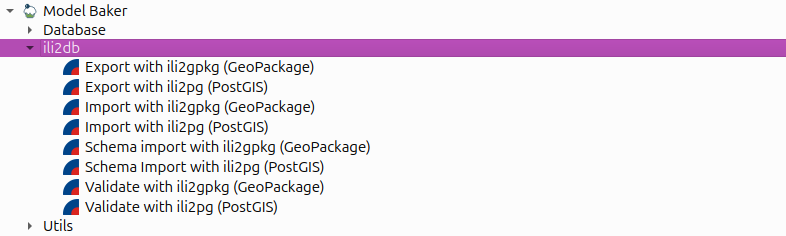
Importiere INTERLIS Modelle mit ili2db
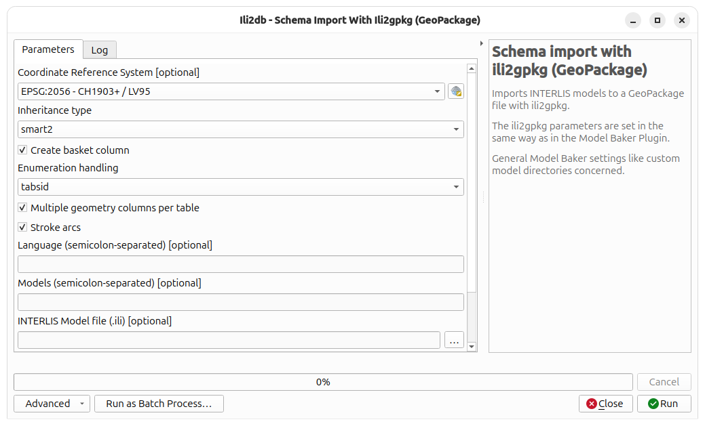
Die Einstellungen sind dieselben wie diejenigen, die unter anderem in den erweiterten Optionen im Wizard festgelegt werden können.
Imports data with ili2pg
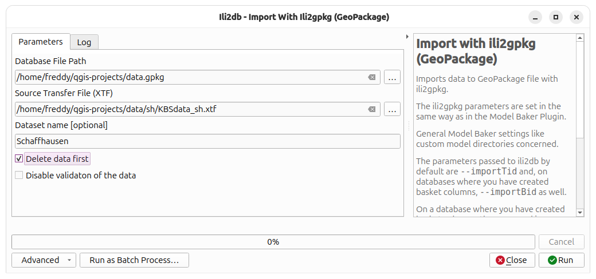
Die Parameter, die standardmässig an ili2db übergeben werden, sind --importTid und, bei Datenbanken, in denen du Basketspalten erstellt hast, zusätzlich --importBid. Bei einer Datenbank, in der du Basketspalten erstellt hast, lautet der Befehl --update (oder --replace, wenn du wählst, die Daten zuerst zu löschen). Bei solchen Datenbanken musst du ausserdem einen Datensatznamen für den Import definieren.
Exportiere Daten mit ili2db
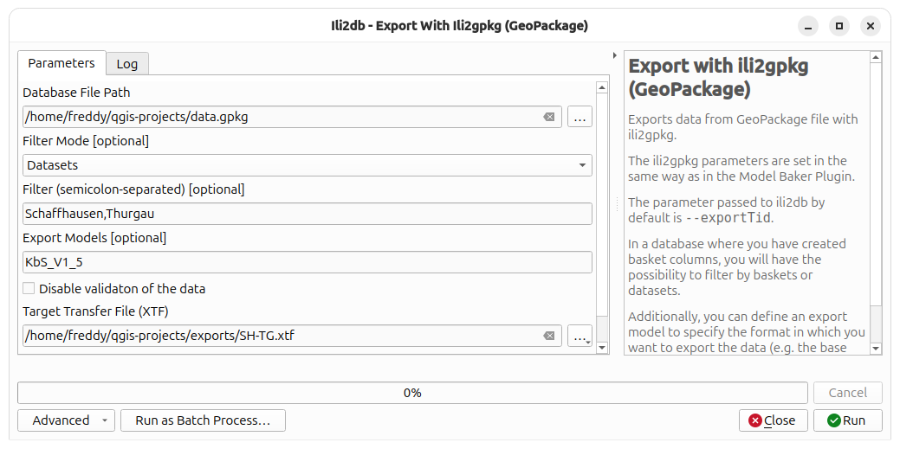
Der Parameter, der standardmässig an ili2db übergeben wird, ist --exportTid. In einer Datenbank, in der du Basketspalten erstellt hast, kannst du nach Baskets oder Datensätzen filtern. Du kannst auch ein Exportmodell definieren, um das Format festzulegen, in dem du die Daten exportieren möchtest (z. B. das Basismodell deines erweiterten Modells).
Validatiere Daten mit ili2db
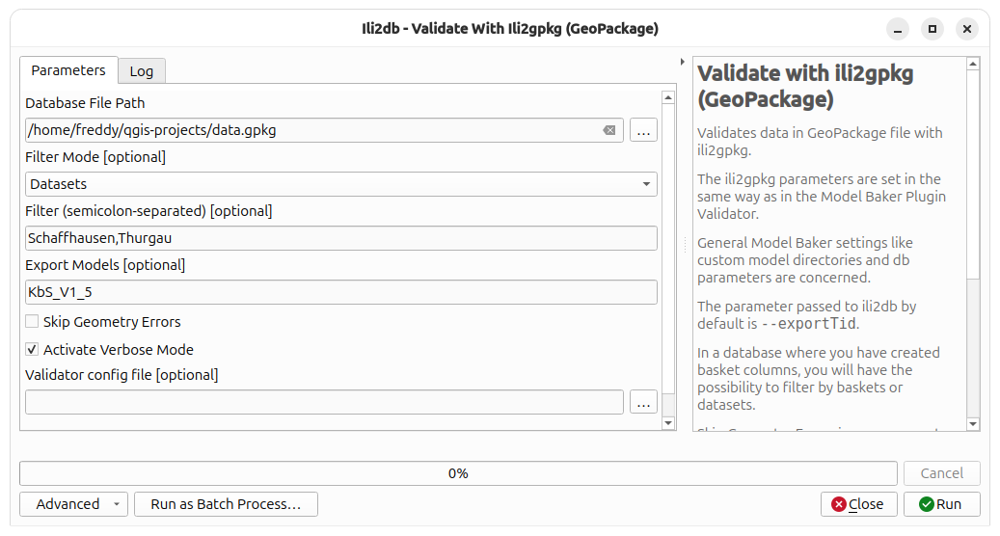
Der Parameter, der standardmässig an ili2db übergeben wird, ist --exportTid. In einer Datenbank, in der du Basketspalten erstellt hast, kannst du nach Baskets oder Datensätzen filtern. Skip Geometry Errors ignoriert Geometriefehler (--skipGeometryErrors) und die AREA-Topologieprüfung (--disableAreaValidation), und der Verbose-Modus liefert dir mehr Informationen in der Log-Ausgabe. Du kannst auch ein Exportmodell definieren, um das Format festzulegen, in dem du die Daten validieren möchtest (z. B. das Basismodell deines erweiterten Modells). Du kannst ausserdem eine Validator-Konfigurationsdatei hinzufügen, um die Validierung zu steuern.
Dieser Algorithmus gibt einen Pfad zur resultierenden XTF-Datei zurück, die du verwenden kannst, um das Feedback deiner Validierung zu analysieren.
Datenbank Algorithmen
Zu finden in der Gruppe Model Baker > Database
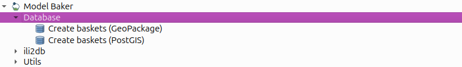
Erstelle Baskets
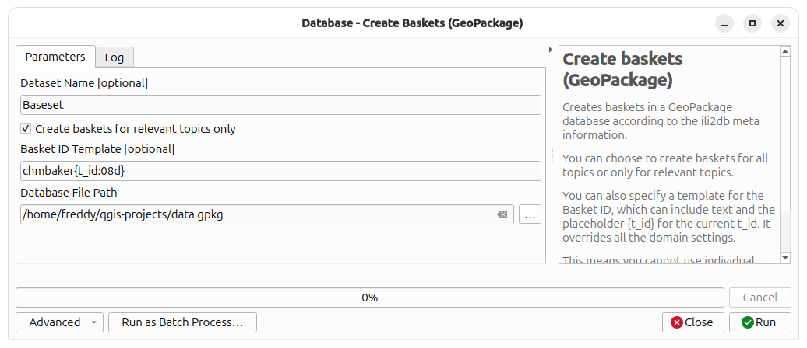
Erstellt Baskets in einer Datenbank gemäss den ili2db-Metainformationen. Du kannst wählen, ob Baskets für alle Topics oder nur für relevante Topics erstellt werden sollen. Du kannst auch eine Vorlage für die Basket-ID angeben, die Text und den Platzhalter {t_id} für die aktuelle t_id enthalten kann. Sie überschreibt alle Domain-Einstellungen. Das bedeutet, dass du keine individuellen Vorlagen für verschiedene Topics verwenden kannst, aber du kannst dieselbe Vorlage für alle Topics verwenden.
Utils
Zu finden in der Gruppe Model Baker > Utils
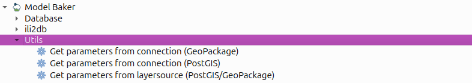
Diese Parameter werden für Processing-Modelle im QGIS Model Designer verwendet.
Lese DB-Parameter aus einem Layersource
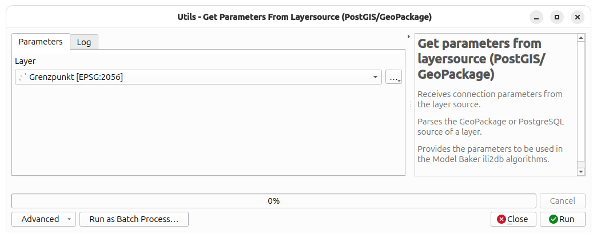
Liest aus der Datenquelle eines Layers die Datenbankparameter aus, die in den Model Baker ili2db-Algorithmen verwendet werden sollen. Dieser Algorithmus berücksichtigt GeoPackage- und PostgreSQL-Quellen. Er gibt nur zurück, was er findet.
Lese DB-Parameters aus einer Verbindung
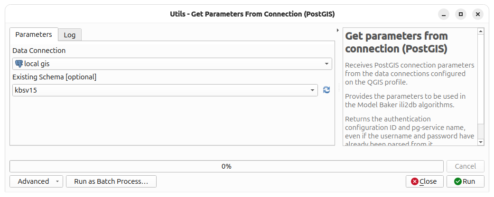
Liest aus einer in der Datenquellenverwaltung konfigurierten Verbindung die Datenbankparameter aus, die in den Model Baker ili2db-Algorithmen verwendet werden sollen. Der Algorithmus gibt auch die ID der Authentifizierungskonfiguration und den pg-service-Namen zurück, selbst wenn Benutzername und Passwort bereits daraus ausgelesen wurden.
Beispiel eines Processing Modells
Use Case - Ein XTF eines Subsets exportieren
Wir haben einen Datensatz als XTF zur Verfügung und möchten ein vollständig gültiges Subset davon.
In diesem Fall haben wir die Gewässerraumdaten des Kantons Zürich. Wir möchten auf einfache Weise ein Subset exportieren, das nur die Gewässerräume eines bestimmten Gewässers enthält.
Note
Für alle, die nicht im Thema sind: Der Gewässerraum umfasst Flächen, welche die natürlichen Funktionen der Gewässer, den Hochwasserschutz und die Gewässernutzung sichern. Diese Daten sind frei zugänglich.
Das GUI sollte so aussehen.
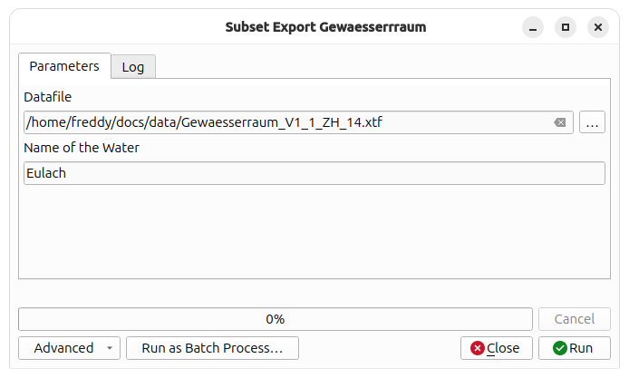
Und das Resultat sollte eine XTF-Datei im temporären Ordner sein.
Das Processing Modell in den folgenden Schritten benötigt keine Layer im Projekt. Wenn du die Resultate trotzdem als Layer anzeigen möchtest, dann sieh dir den Hinweis unter Feature Filter an. Dies sind die Quelldaten rund um die Stadt Winterthur.
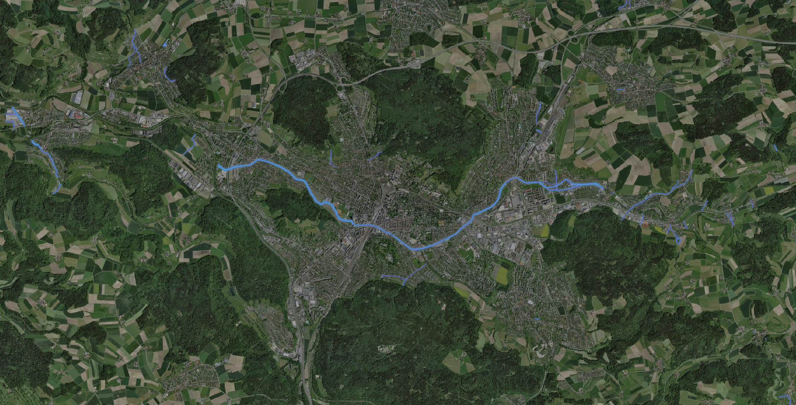
Das Processing Modell erstellen
Erstellen wir mit dem QGIS Model Designer ein Processing Modell, das uns einige Model Baker Algorithmen anbietet.
Wir öffnen ihn im Menü: Verarbeitung > Modellentwurf
1. Das Modell importieren
Zuerst brauchen wir die Daten in einem GeoPackage. Bevor wir das haben können, müssen wir das INTERLIS Modell importieren.
Dafür brauchen wir den Algorithmus Create Schema with ili2gpkg (GeoPackage).
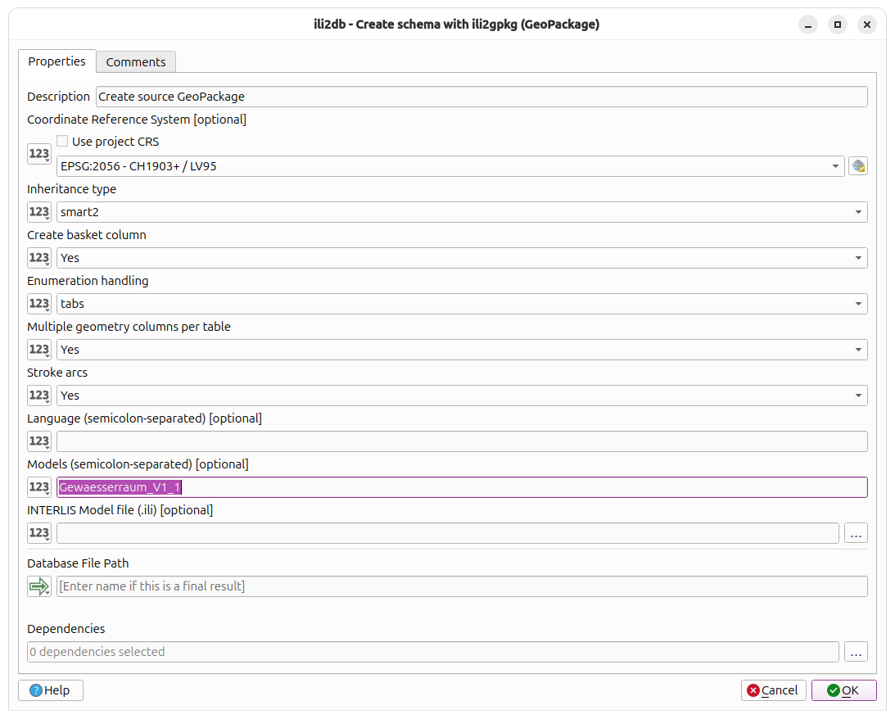
- Wir benennen ihn
Create source GeoPackage - Als Enumeration handling wählen wir
tabs. Dies erleichtert die Datenmigration, weil die Aufzählungswerte direkt im Feld gespeichert werden - Als Model geben wir
Gewaesserraum_V1_1ein. Dadurch wird das Modell in den offiziellen oder konfigurierten Repositories gefunden.
2. Die Daten importieren
Um die Daten aus einzelnen Quellen auszuwählen, fügen wir einen Input Parameter vom Typ File/Folder hinzu.
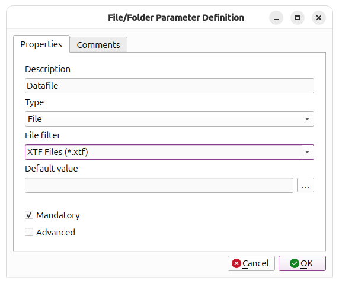
- Wir benennen ihn
Datafile - Den File filter ändern wir zu
XTF Files (*.xtf), um in der Auswahl nur XTF-Dateien zuzulassen
Wir fügen den Algorithmus Import with ili2gpkg (GeoPackage) hinzu
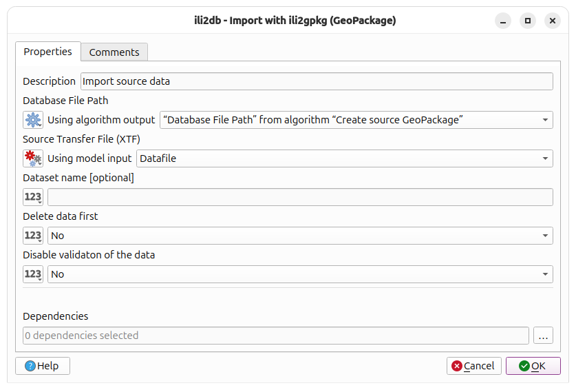
- Als Database File Path nehmen wir die Algorithmusausgabe
Database File Pathdes Algorithmus "Create Source GeoPackage" - Das Source Transfer File sollte aus der Modelleingabe
Datafileübernommen werden.
3. Feature Filter
Nun müssen wir das Feature filtern. Zum Glück reicht es, nur einen Layer zu filtern. Du kannst mit einem Processing Modell aber auch mehrere Tabellen filtern, die voneinander abhängen. Das ist nur komplexer und nicht für ein einfaches Beispiel geeignet.
Wir brauchen einen weiteren Input Parameter vom Typ String, um den Gewässernamen zu definieren.
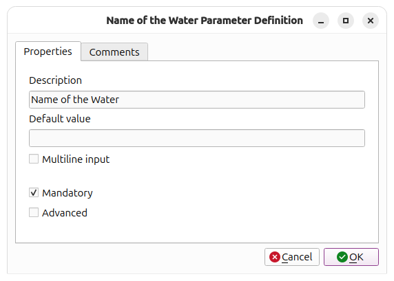
Wir benennen ihn entsprechend.
Dann verwenden wir den nativen QGIS-Algorithmus namens Feature Filter.
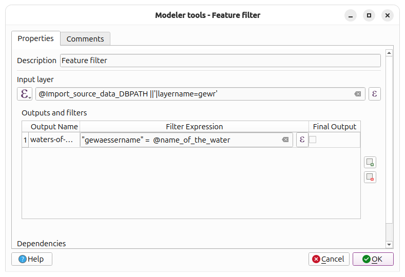
- Wir definieren den Input Layer als vorberechneten Wert mit einem Ausdruck:
@Import_source_data_DBPATH||'|layername=gewr'. Das bedeutet, dass wir den Layer nicht in QGIS laden müssen, sondern ihn aus dem GeoPackage lesen können (bereitgestellt durch die Ausgaben der vorherigen Algorithmen) und den Layernamen daran anhängen. Mit PostGIS würde dies anders funktionieren. - Wir fügen den Filter
waters-of-interesthinzu und definieren den Filterausdruck"gewaessername" = @name_of_the_water. "name_of_the_water" ist eine Variable, die wir verwenden können, sobald der Input Parameter definiert ist.
Nun haben wir bereits ein kleines Processing Modell, das vollständig funktionieren würde.
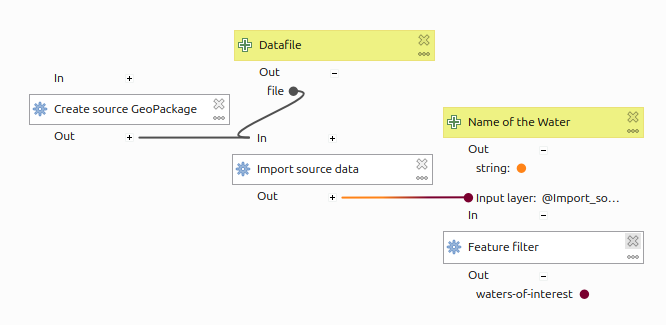
Wir könnten es als Final Output definieren und würden die Gewässerräume der "Eulach" (oder welchen Gewässernamen wir auch immer eingeben) in QGIS erhalten.
Note
Wenn du überprüfen möchtest, ob du alles richtig machst, kannst du den Algorithmus Load Layer into Project verwenden und den Layer als vorberechneten Wert definieren, wie z. B. für den ursprünglichen Datenlayer @Import_source_data_DBPATH ||'|layername=gewr'
4. Das Modell (erneut) importieren
Der Plan ist nun, das gefilterte Modell in ein neues GeoPackage zu bringen, das auf demselben INTERLIS Modell basiert, und es dann von dort zu exportieren. Dafür müssen wir ein zweites GeoPackage erstellen.
Wieder nehmen wir den Algorithmus Create Schema with ili2gpkg (GeoPackage).
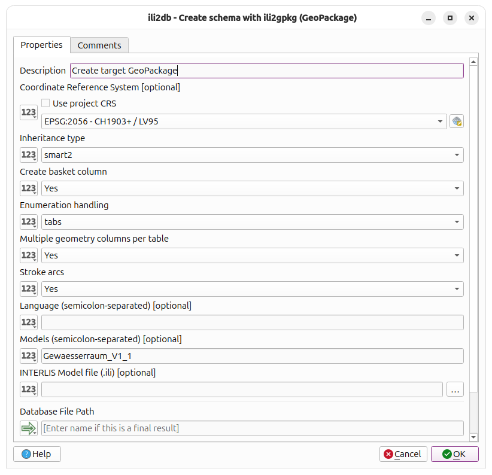
- Wir benennen ihn
Create target GeoPackage - Als Enumeration handling wählen wir
tabs. Dies erleichtert die Datenmigration, weil die Aufzählungswerte direkt im Feld gespeichert werden - Als Model geben wir
Gewaesserraum_V1_1ein. Dadurch wird das Modell in den offiziellen oder konfigurierten Repositories gefunden.
5. Die Baskets erstellen
Da wir die Daten nicht importieren, müssen wir die Baskets im Ziel-GeoPackage erstellen.
Dafür haben wir den Algorithmus Create baskets (GeoPackage).
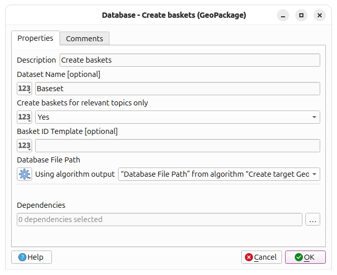
- Als Database File Path nehmen wir die Algorithmusausgabe
Database File Pathdes Algorithmus "Create Target GeoPackage"
6. Felder überarbeiten
In anderen Modellen würde jetzt die grosse Arbeit beginnen: das Neuzuordnen von Fremdschlüsseln zu anderen Objekten oder Katalogwerten. In unserem Modell hier haben wir nur ein Problem mit Fremdschlüsseln: die IDs der Baskets.
Note
Eigentlich wäre dies bei diesem speziellen Modell nicht einmal ein Problem, weil es keine Baskets erfordert. Da wir sie aber bereits erstellt haben, möchten wir sie auch verwenden.
Um die korrekten Baskets zu haben, müssen wir deren T_Id als Fremdschlüssel zu den gefilterten Daten hinzufügen. Dies machen wir mit dem Algorithmus Refactor Fields.
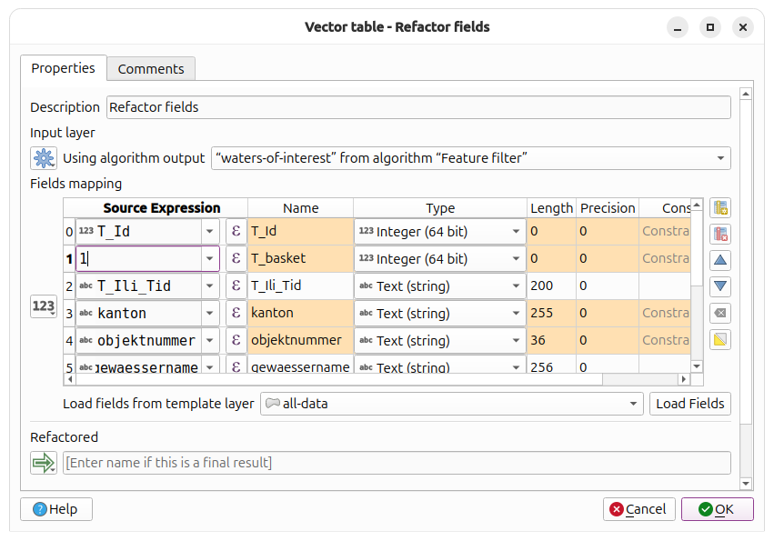
- Als Input Layer nehmen wir die Algorithmusausgabe
waters-of-interest - Wir können die Felder aus einem generierten Layer laden oder manuell eingeben.
- Nun müssen wir etwas für das Feld T_basket festlegen. Am einfachsten wäre es, einfach
1einzugeben, weil wir in diesem Fall wissen, dass er dieseT_Idhaben wird, aber wir könnten sie auch mit komplexeren Ausdrücken ermitteln, wieattribute( get_feature( 'basket-table', 'topic', 'Gewaesserraum_V1_1.GewR' -- the topic of this class ),'T_Id' )
7. Die Features speichern
Nun müssen wir die gefilterten und refaktorierten Features im Ziel-GeoPackage speichern.
Wir verwenden den Algorithmus Save vector features to file.
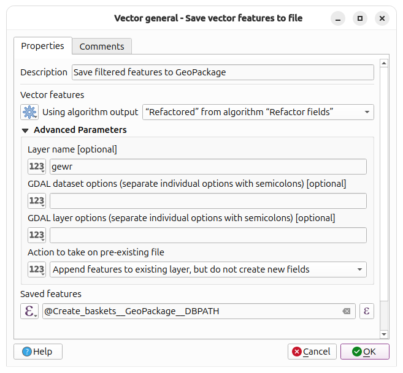
- Als Quelle für features wählen wir die Algorithmusausgabe
Refactored - Im layer name müssen wir den Tabellennamen definieren. Er lautet
gewr - Dann müssen wir die action
Append features to existing layer, but do not create new fieldswählen - Und das Ziel für die saved features sollte unser Target-GeoPackage sein. Das bedeutet, dass wir die Variable
@Create_baskets__GeoPackage__DBPATHals vorberechneten Wert nehmen
Nun haben wir die gefilterten Daten in einem INTERLIS-basierten GeoPackage. Das Processing-Modell sieht so aus:
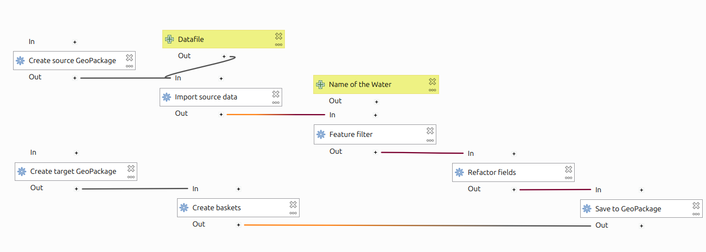
Es gibt aber einen Fallstrick. Für "Save to GeoPackage" (oder, wenn wir die T_Id des Baskets mit einem Ausdruck ermitteln, bereits in "Refactor fields") müssen wir sicher sein, dass das Ziel-GeoPackage bereits existiert. Es funktioniert jetzt perfekt, weil der Import der Daten des Kantons Zürich länger dauert als das Erstellen der Baskets, aber um sicherzugehen, führen wir eine Abhängigkeit ein. Das machen wir im Algorithmus "Refactor fields".
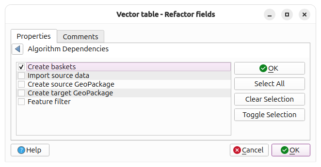
8. Die Teilmenge validieren
Nun möchten wir sicher sein, dass unser Subset gültig ist. Dafür verwenden wir den Algorithmus Validate with ili2gpkg.
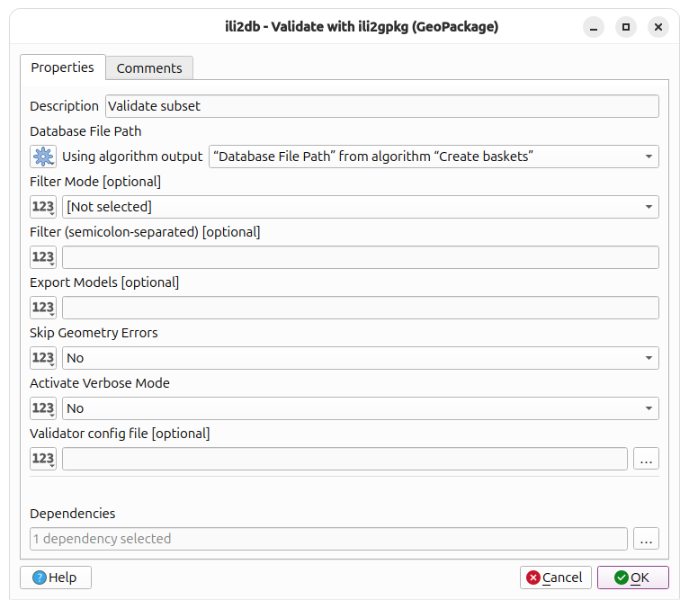
- Als Database File Path wählen wir wieder die Algorithmusausgabe
Database File Pathdes Algorithmus "Create baskets" - Und wir konfigurieren eine Abhängigkeit von "Save to GeoPackage" (weil sonst das GeoPackage validiert wird, bevor die neuen Features gespeichert wurden)
9. Das Subset exportieren
Und schliesslich exportieren wir das Subset mit dem Algorithmus Export with ili2gpkg. Natürlich hätten wir deshalb den Schritt mit der Validierung nicht gebraucht, ausser wenn wir die Teilmenge exportieren möchten, selbst wenn sie ungültig ist, aber die Information erhalten möchten, dass sie nicht gültig wäre.
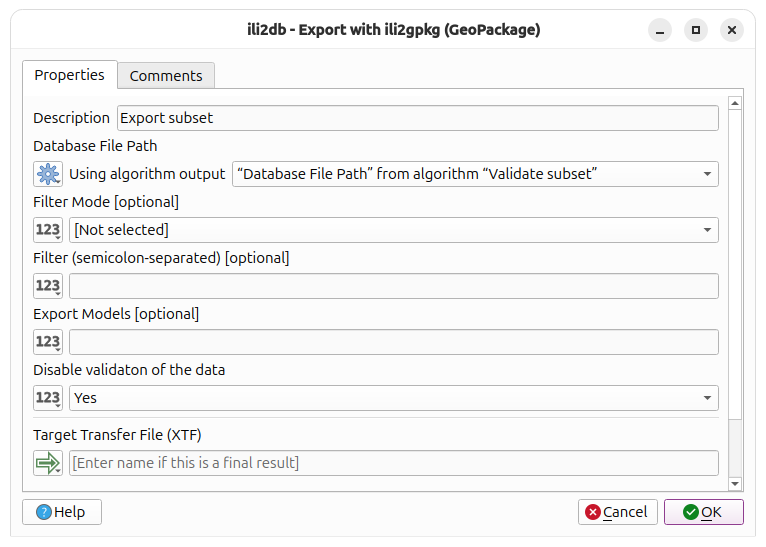
- Als Database File Path wählen wir die Algorithmusausgabe
Database File Pathdes Algorithmus "Validate subset"
Resultat
Und so sieht es schliesslich aus.
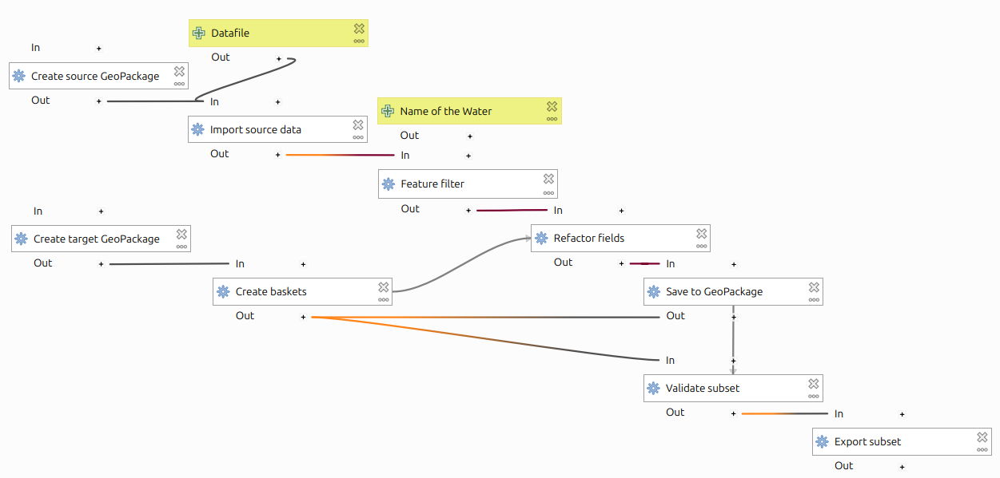
- Erstes GeoPackage erstellen
- Daten importieren
- Daten auf ein Subset filtern
- BID für das Subset ermitteln
- Zweites GeoPackage erstellen
- Baskets im zweiten GeoPackage erstellen
- Subset im zweiten GeoPackage speichern
- Subset validieren und exportieren
- Fertig
Und als Layer sieht es so aus.
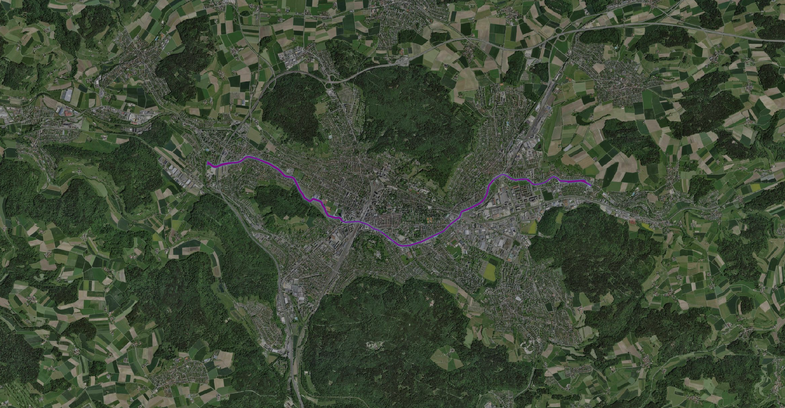
Um es selbst auszuprobieren, findest du die Daten hier und das Modell hier.